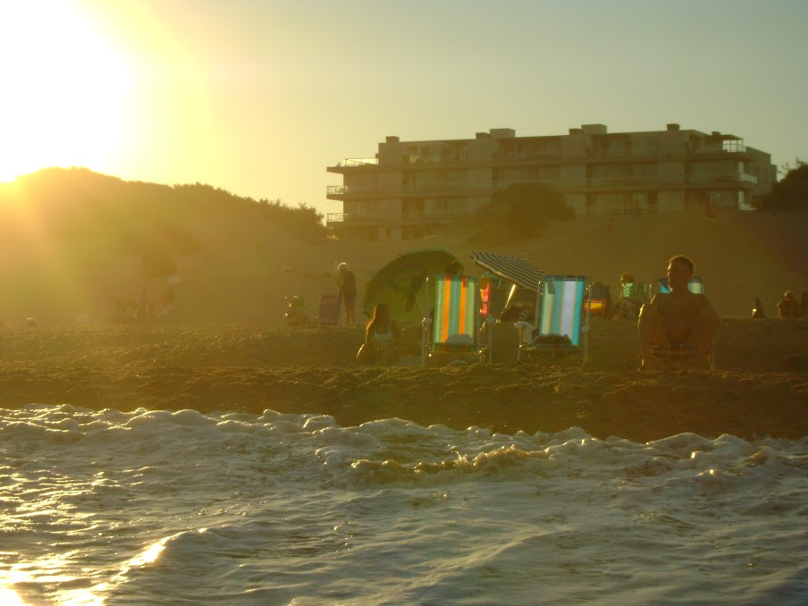

Mar de las Pampas 2025 Volver  ¡Volví a Mar de las Pampas y, una vez más, me conquistó! Febrero es un mes ideal; ya pasó el pico de la temporada y la paz que se respira es increíble. Este viaje fue la excusa perfecta para desacelerar. Lo que más me gusta de este lugar es esa sensación de estar en un pueblo mágico, donde las calles son de arena y los pinos gigantes te hacen olvidar el cemento. El plan de cada día era simple, pero perfecto: Mañanas: Desayuno tranquilo en la cabaña y una caminata larga por la orilla, con el sol aún suave. El sonido del mar y el aroma a pino fresco son la mejor terapia. Mediodías: Almuerzo ligero y, por supuesto, un buen rato de lectura en la galería con vista al bosque. Tardes: ¡Playa! El sector de Mar de las Pampas suele ser más tranquilo que otros balnearios vecinos, ideal para disfrutar del sol sin aglomeraciones. Noches: La vida nocturna es tranquila; lo mejor es cenar en alguno de los restaurantes escondidos entre los árboles (¡hay una parrilla que es imperdible!) y después un café o un helado artesanal. Este viaje no se trató de adrenalina o de checklists de lugares. Fue un viaje para recargar energías y recordar lo bien que se siente cuando uno se permite simplemente... estar. Publicado por Fernando Orioli - Febrero 2025